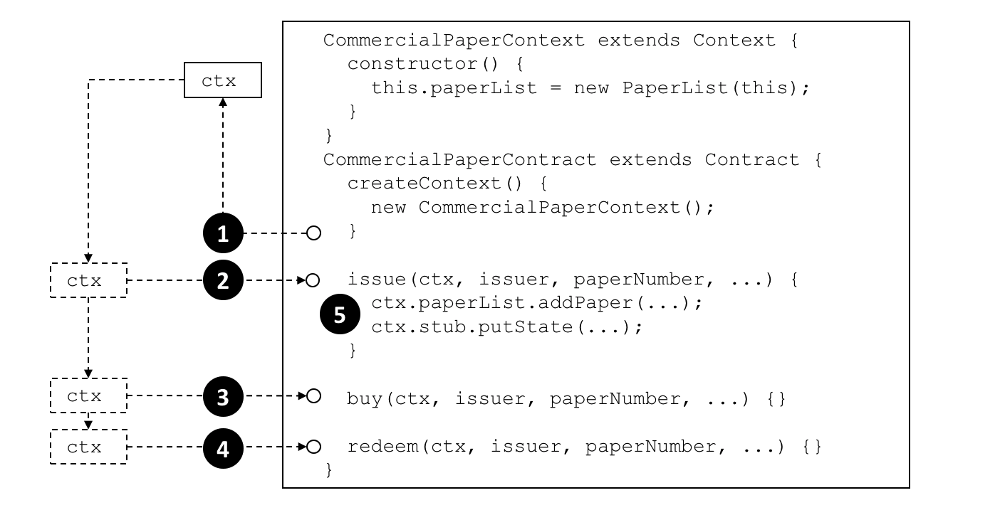

Transaction context¶
Audience: Architects, application and smart contract developers
A transaction context performs two functions. Firstly, it allows a developer to define and maintain user variables across transaction invocations within a smart contract. Secondly, it provides access to a wide range of Fabric APIs that allow smart contract developers to perform operations relating to detailed transaction processing. These range from querying or updating the ledger, both the immutable blockchain and the modifiable world state, to retrieving the transaction-submitting application’s digital identity.
A transaction context is created when a smart contract is instantiated, and made available to every subsequent transaction invocation. A transaction context helps smart contract developers write programs that are powerful, efficient and easy to reason about.
Scenario¶
In the commercial paper sample, papercontract initially defines the name of the list of commercial papers for which it’s responsible. Each transaction subsequently refers to this list; the issue transaction adds new papers to it, the buy transaction changes its owner, and the redeem transaction marks it as complete. This is a common pattern; when writing a smart contract it’s often helpful to initialize and recall particular variables in sequential transactions.
transaction.scenario A smart contract transaction context allows smart contracts to define and maintain user variables across transaction invocations. Refer to the text for a detailed explanation.
Programming¶
When a smart contract is constructed, a developer can optionally override the
built-in Context class createContext method to create a custom context:
createContext() {
new CommercialPaperContext();
}
In our example, the CommercialPaperContext is specialized for
CommercialPaperContract. See how the custom context, addressed through this,
adds the specific variable PaperList to itself:
CommercialPaperContext extends Context {
constructor () {
this.paperList = new PaperList(this);
}
}
When the createContext() method returns at point (1) in the diagram
above, a custom context ctx has been created which contains
paperList as one of its variables.
Subsequently, whenever a smart contract transaction such as issue, buy or redeem
is called, this context will be passed to it. See how at points (2), (3)
and (4) the same commercial paper context is passed into the transaction
method using the ctx variable.
See how the context is then used at point (5):
ctx.paperList.addPaper(...);
ctx.stub.putState(...);
Notice how paperList created in CommercialPaperContext is available to the
issue transaction. See how paperList is similarly used by the redeem and
buy transactions; ctx makes the smart contracts efficient and easy to
reason about.
You can also see that there’s another element in the context – ctx.stub –
which was not explictly added by CommercialPaperContext. That’s because stub
and other variables are part of the built-in context. Let’s now examine the
structure of this built-in context, these implicit variables and how to use
them.
Structure¶
As we’ve seen from the example, a transaction context can
contain any number of user variables such as paperList.
The transaction context also contains two built-in elements that provide access to a wide range of Fabric functionality ranging from the client application that submitted the transaction to ledger access.
ctx.stubis used to access APIs that provide a broad range of transaction processing operations fromputState()andgetState()to access the ledger, togetTxID()to retrieve the current transaction ID.ctx.clientIdentityis used to get information about the identity of the user who submitted the transaction.
We’ll use the following diagram to show you what a smart contract can do using
the stub and clientIdentity using the APIs available to it:
context.apis A smart contract can access a
range of functionality in a smart contract via the transaction context stub
and clientIdentity. Refer to the text for a detailed explanation.
Stub¶
The APIs in the stub fall into the following categories:
World state data APIs. See interaction point (1). These APIs enable smart contracts to get, put and delete state corresponding to individual objects from the world state, using their key:
These basic APIs are complemented by query APIs which enable contracts to retrieve a set of states, rather than an individual state. See interaction point (2). The set is either defined by a range of key values, using full or partial keys, or a query according to values in the underlying world state database. For large queries, the result sets can be paginated to reduce storage requirements:Private data APIs. See interaction point (3). These APIs enable smart contracts to interact with a private data collection. They are analogous to the APIs for world state interactions, but for private data. There are APIs to get, put and delete a private data state by its key:
This set is complemented by set of APIs to query private data (4). These APIs allow smart contracts to retrieve a set of states from a private data collection, according to a range of key values, either full or partial keys, or a query according to values in the underlying world state database. There are currently no pagination APIs for private data collections.Transaction APIs. See interaction point (5). These APIs are used by a smart contract to retrieve details about the current transaction proposal being processed by the smart contract. This includes the transaction identifier and the time when the transaction proposal was created.
getTxID() returns the identifier of the current transaction proposal (5).
getTxTimestamp() returns the timestamp when the current transaction proposal was created by the application (5).
getCreator() returns the raw identity (X.509 or otherwise) of the creator of transaction proposal. If this is an X.509 certificate then it is often more appropriate to use
ctx.ClientIdentity.getSignedProposal() returns a signed copy of the current transaction proposal being processed by the smart contract.
getBinding() is used to prevent transactions being maliciously or accidentally replayed using a nonce. (For practical purposes, a nonce is a random number generated by the client application and incorporated in a cryptographic hash.) For example, this API could be used by a smart contract at (1) to detect a replay of the transaction (5).
getTransient() allows a smart contract to access the transient data an application passes to a smart contract. See interaction points (9) and (10). Transient data is private to the application-smart contract interaction. It is not recorded on the ledger and is often used in conjunction with private data collections (3).
Key APIs are used by smart contracts to manipulate state key in the world state or a private data collection. See interaction points 2 and 4.
The simplest of these APIs allows smart contracts to form and split composite keys from their individual components. Slightly more advanced are the
ValidationParameter()APIs which get and set the state based endorsement policies for world state (2) and private data (4). Finally,getHistoryForKey()retrieves the history for a state by returning the set of stored values, including the transaction identifiers that performed the state update, allowing the transactions to be read from the blockchain (10).Event APIs are used manage event processing in a smart contract.
-
Smart contracts use this API to add user events to a transaction response. See interaction point (5). These events are ultimately recorded on the blockchain and sent to listening applications at interaction point (11).
-
Utility APIs are a collection of useful APIs that don’t easily fit in a pre-defined category, so we’ve grouped them together! They include retrieving the current channel name and passing control to a different chaincode on the same peer.
-
See interaction point (13). A smart contract running on any peer can use this API to determined on which channel the application invoked the smart contract.
-
See interaction point (14). Peer3 owned by MagnetoCorp has multiple smart contracts installed on it. These smart contracts are able to call each other using this API. The smart contracts must be collocated; it is not possible to call a smart contract on a different peer.
Some of these utility APIs are only used if you’re using low-level chaincode, rather than smart contracts. These APIs are primarily for the detailed manipulation of chaincode input; the smart contractContractclass does all of this parameter marshalling automatically for developers.-
ClientIdentity¶
In most cases, the application submitting a transaction will be using an X.509
certificate. In the example, an X.509 certificate (6) issued
by CA1 (7) is being used by Isabella (8) in her application to sign
the proposal in transaction t6 (5).
ClientIdentity takes the information returned by getCreator() and puts a set
of X.509 utility APIs on top of it to make it easier to use for this common use
case.
getX509Certificate() returns the full X.509 certificate of the transaction submitter, including all its attributes and their values. See interaction point (6).
getAttributeValue() returns the value of a particular X.509 attribute, for example, the organizational unit
OU, or distinguished nameDN. See interaction point (6).assertAttributeValue() returns
TRUEif the specified attribute of the X.509 attribute has a specified value. See interaction point (6).getID() returns the unique identity of the transaction submitter, according to their distinguished name and the issuing CA’s distinguished name. The format is
x509::{subject DN}::{issuer DN}. See interaction point (6).getMSPID() returns the channel MSP of the transaction submitter. This allows a smart contract to make processing decisions based on the submitter’s organizational identity. See interaction point (15) or (16).